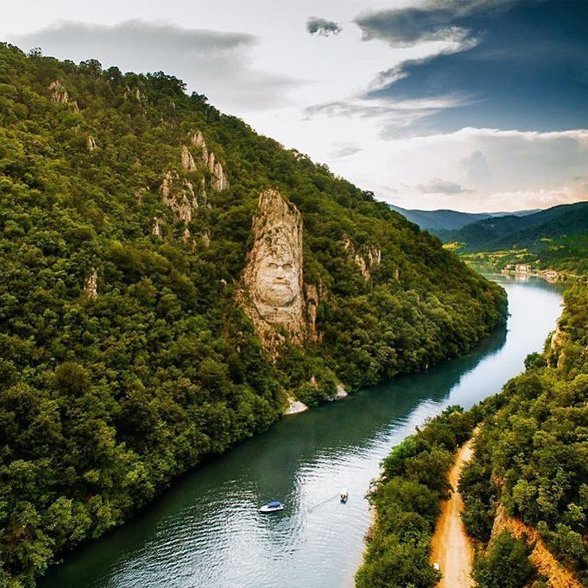
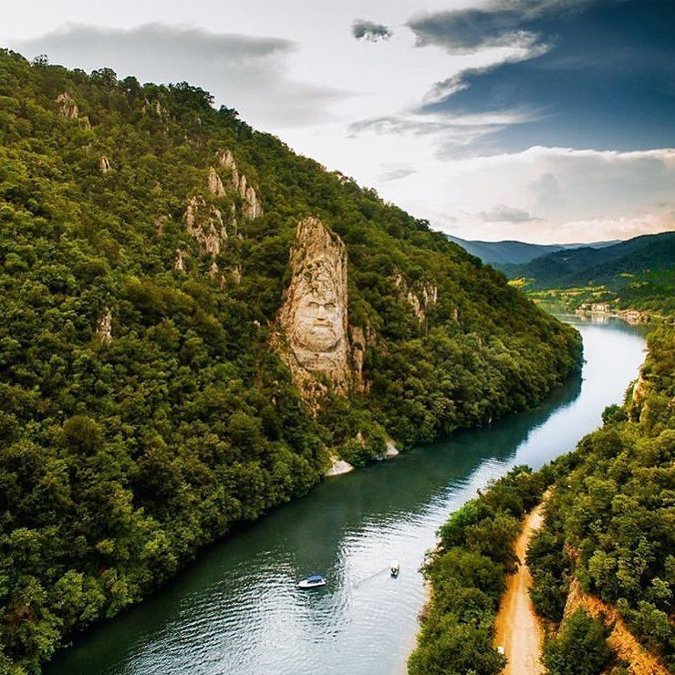

E dimineață și te-ai trezit. Primul gând care
încolțește este că, după tot
drumul lung
și obositor care te-a adus aseară aici, la intrarea Dunării în țară, vrei să fii răsplătit;
vrei ca Dunărea să îți dea înapoi din efortul
pe care l-ai făcut venind până aici ca să
o vezi într-una din cele mai
glorioase posturi. Te ridici din pat și deschizi somnoros geamul, ieși pe balcon și timpul se oprește.
Strălucirea apei în soarele dimineții îți ia privirea, iar muntele de la malul din fața ta
pare că se dă cu smerenie din calea prea-mândrului fluviu.
Chiar ești aici: la malul
Dunării, privind în față pământul sârbesc, înconjurat de atâta liniște de parcă te afli
la începutul lumii. La Clisura Dunării totul e lirism și măreție, poezie și glorie;
mai impunătoare decât statuia lui Decebal este doar curgerea grăbită a Dunării care,
fără pic de sfială, da la o parte munții din calea ei pentru a ajunge acolo unde soarta
i-a dat să ajungă: în mare.
Așa am descrie noi primele minute de la vederea
Dunării în această ipostază a ei.
Dacă vrei să îți satisfaci încă și mai mult poftele sufletului nu ai decât să recurgi
la o plimbare de aproape 2 ore cu vaporașul.
Click aici pentru a vă întoarce la pagina inițială.